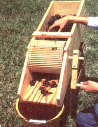
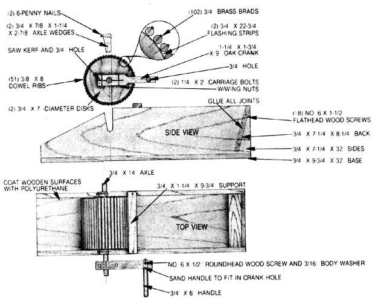
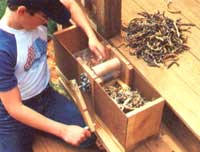
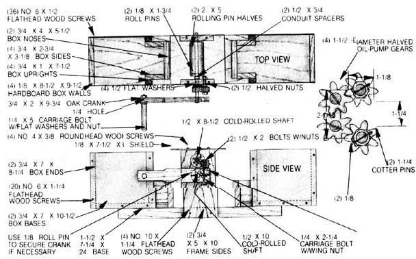
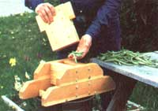
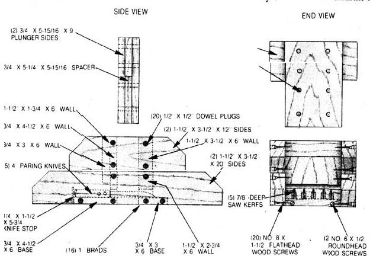
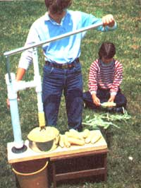
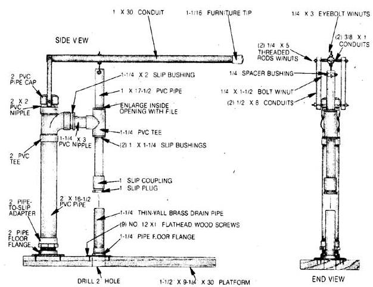

A green thumb can make for tired fingers at harvest time, so you might want to consider...
Beginning just about this time of year, many of MOTHER's staffers and readers start giving thought to a common concern: what to do with the garden's bounty. Now, harvesting the fruits (and vegetables) of summer's labor isn't the problem ... but actually preparing those abundant yields for the larder can be taxing to even the most diligent home gardener.
With this task in mind, a couple of MOM's people were more than a little pleased when they discovered that Mr. Hole Orr, an Eco-Village neighbor and a man of the land in his own right, had regularly been using-and was willing to share the designs for-a number of soft-tech garden harvest tools that just about anybody could put together.
For the most part, each of the four implements involves uncomplicated wood construction techniques, and none requires fancy tools. Also be aware that we spruced up Mr. Orr's utilitarian originals to make them a bit more pleasing to the eye, but this "beautification" doesn't necessarily make the tools work any better. If you want to use nails instead of screws in places, go right ahead (and an application of carpenter's glue would increase the strength of the wood joints).
So if beans, corn, or grapes are on your home garden hit parade, you'll certainly be able to find a use for Hollen's helpers at harvest time (unless, of course, you enjoy preparing your reapings the old-fashioned way).
GRAPE CRUSHER
Pressing grapes is no easy task without the benefit of equipment, as anyone who's done it by hand can tell you. Fortunately) that initial step in preparing the vine fruit for jam, jelly, or fermentation involves merely breaking the berries' skins to produce a rich pulp of sheath and juice, and this simple mechanism can handle that job well.
It's just a three-sided tub with a one-piece bottom and an upper support. A 7-3/4" drum, mounted to a 3/4" dowel axle, rotates in two slots cut into the tub's sides, and removable wedge-shaped blocks hold the shaft in place. A homemade hardwood crank clamped to one end of the axle is used to turn the drum.
That cylinder does nothing more than catch the pulpy orbs and crush them between its ribs and the bottom of the tub. The slats are 8" lengths of 3/8" dowels tacked-parallel and about 1/8" apart-between two wooden end disks. With the hollow drum installed in its sockets, there should be about 1/8" clearance between it and the tub's lower surface ... just enough to let the juice and skins pass through and slide into a waiting bucket when the machine is inclined forward slightly.
BEAN SHELLER
Considering how tedious bean-shelling is (and how prolific the pole varieties can be), it's sometimes hard to believe that a goodly harvest can be completely shelled before the start of a new season! Even with friends and neighbors lending a hand, husking the healthful "hangers" is a time-consuming chore ... vet one that hardly warrants the purchase of an expensive implement.
This rustic pod-wringer works on the same principle as an old-timey washing machine mangle, but you don't need an antique washer to build it ... because the cylinders are made from a halved rolling pin! Similarly, the gear mechanism-which would be far too costly to consider if it were purchased as a new assembly-was snitched from the oil pump in a junked Chevy 250-cubic-inch six-cylinder engine.
The working part of the machine is mounted in a wooden frame that is fastened to a 2 X 8 base. A homemade crank handle, clamped to the main shaft, turns the lower roller, which is pinned to the axle. At the same time, an oil-pump cog, also locked to the shaft, transfers motion to an intermediate set of idler gears bolted through one side of the wooden frame ... these, in turn, spin a fourth toothed wheel connected to the upper shaft and roller assembly.
In order for the rollers to draw the pods in, they must revolve in opposite directions, and the four small gears described above assure that they will. However, to get four cogs from the two that make up the innards of the scavenged pump, you'll have to cut each one to half its thickness with a hacksaw. Fortunately, these metal gears are somewhat soft, so what might sound like an impossible task is actually one that just requires a bit of patience, a sharp blade, and a vise.
Small boxes positioned in the "in" and "out" sides of the rollers catch the seeds and the dried pod husks, respectively. A plastic shield, placed on top of the mangle frame, prevents errant bits from escaping the bins, and a layer of textured duct tape wrapped around the lower roller gives that drum the necessary grip to pull the more stubborn shells through.
BEAN SLICER
String, or snap, beans are among the most popular homegrown vegetables ... but if you've got a few bushels to put up, you'll be spending a lot of time at the cutting board before you can freeze or can the luscious legumes. Instead, why not work up this simple tabletop slicer so you can cleave handfuls at one pass? It's easy to build out of what-have-you common pine and a few spare kitchen knives, and the recessed gang-blade arrangement just about eliminates the risk of accidental injury, since the fingers are never exposed to a cutting edge.
The sides of the tool are nothing more than a pair of shaped 2 X 4's, one glued on top of the other. The walls of the cutting chamber serve to join the sides and likewise are fashioned from short sections of board. Saw kerfs, cut through the lower edges of these walls, keep the five 4" paring knives 1" apart, and 1 X's mounted flush with the bottom surface of the tool hold the cutters in place. (A small trim strip also prevents them from sliding out handles first.)
A plunger made from a trio of boards sandwiched together fits loosely inside the cutting chamber and presses the beans against the blades, and a stop built into its handle prevents the block from being pushed farther than necessary.
If you don't care what your slicer looks like, you won't need to shape the side boards and can even nail the parts together. The one we made, though, has been prettied up a bit and uses 1/2" dowels, wood screws, brads, and glue as fasteners.
CORN CUTTER
Stripping the kernels from an ear of corn is only a pleasure when the vegetable's just picked and you've got it hot, buttered, and between your teeth. Short of that savory scenario, removing those stubborn nibs from the cob for canning or cooking can be a wearisome chore, no matter how sharp your knife.
If you agree, you might want to take a gander at this "straight shot" cutter that's made, as you can see, from various household plumbing parts and metal pipe or conduit. It allows you to use leverage to force the full ear past a sharpened sink drainpipe that's mounted to the tool's base with a 1-1/4" floor flange. As the cob passes through the center of the cutting tube, the kernels are sliced off to collect in the tube pan ... and the nibless plug falls through an opening in the platform and into a waiting trash can. (jammed cobs can be knocked through the pipe with a short length of 1" dowel.)
We made our cutter by using plastic pipe and PVC cement, but there's nothing that says you can't use black iron-or anything else you might have handy-to get the job done. by the way, the edge of the drainpipe can be beveled quickly on a grinding wheel (the metal's thin, so easy does it!) or worked more slowly with a fine hand-held file.
|
 STAFF PHOTOS |
 |
 |
|
 |
 |
 |
|
 |
 |
|